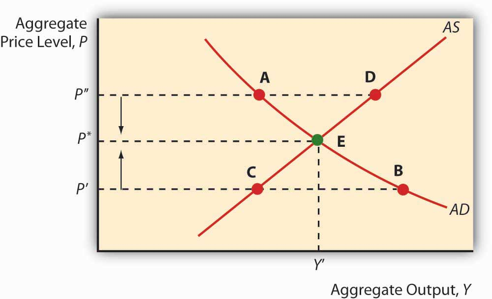
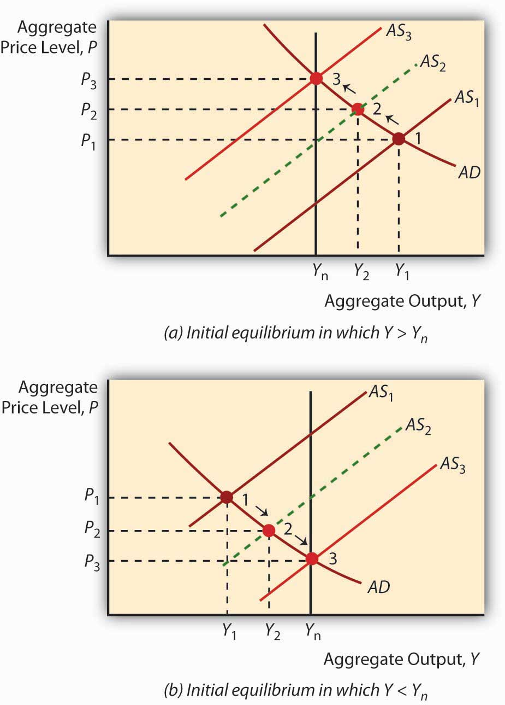
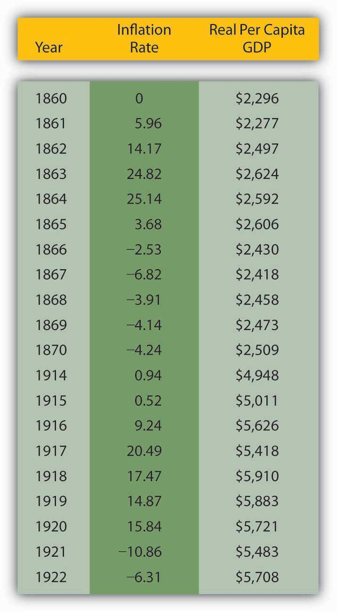

Of course, this is all just a prelude to the main event: slapping these curves—AD, AS, and ASL (the long-run AS curve)—on the same graph at the same time. Let’s start, as in Figure 23.5 "Short-run equilibrium in the macroeconomy", with just the short-run AS and AD curves. Their intersection indicates both the price level P* (not to be confused with the microeconomic price theory model’s p*) and Y* (again not to be confused with q*). Equilibrium is achieved because at any P > P*, there will be a glut (excess supply), so prices (of all goods and services) will fall toward P*. At any P < P*, there will be excess demand, many bidders for each automobile, sandwich, haircut, and what not, who will bid prices up to P*. We can also now examine what happens to P* and Y* in the short run by moving the curves to and fro.
Figure 23.5 Short-run equilibrium in the macroeconomy
To study long-run changes in the economy, we need to add the vertical long-run aggregate supply curve (ASL) to the graph. As discussed above, if Y* is > or < Ynrl, the AS curve will shift (via the labor market and/or inflation expectations) until it Y* = Ynrl, as in Figure 23.6 "Long-run equilibrium in the macroeconomy". So attempts to increase output above its natural rate will cause inflation and recession. Attempts to keep it below its natural rate will lead to deflation and expansion.
Figure 23.6 Long-run equilibrium in the macroeconomy
The so-called self-correcting mechanism described above makes many policymakers uneasy, so the most activist among them argue that the long-run analysis holds only over very long periods. In fact, the great granddaddy, intellectually speaking, of today’s activist policymakers, John Maynard Keynes,http://en.wikipedia.org/wiki/John_Maynard_Keynes once remarked, “[The l]ong run is a misleading guide to current affairs. In the long run we are all dead. Economists set themselves too easy, too useless a task if in tempestuous seasons they can only tell us that when the storm is long past the ocean is flat again.”www.bartleby.com/66/8/32508.html Other economists (nonactivists, including monetarists like Milton Friedman) think that the short run is short indeed and the long run is right around the corner. Figuring out how short and long the short and long runs are is important because if the nonactivists are correct, policymakers are wasting their time trying to increase output by shifting AD to the right: the AS curve will soon shift left, leaving the economy with a higher price level but the same level of output. Similarly, policymakers need do nothing in response to a negative supply shockA sudden change affecting production of goods, such as a change in technology or input (materials, labor) prices. A negative shock decreases production while a positive one increases it, ceteris paribus. (which, as noted above, shifts AS to the left) because the AS curve will soon shift back to the right on its own, restoring both the price level and output. If the activists are right, on the other hand, policymakers can improve people’s lives by shifting AD to the right to counter, say, the effects of negative supply shocks by helping the AS curve to return to its original position or beyond.
The holy grail of economic growthReal per capita GDP. theory is to figure out how to shift Ynrl to the right because, if policymakers can do that, it doesn’t matter how short the long term is. Policymakers can make a difference—and for the better. The real business cycle theory of Edward Prescott suggests that real aggregate supply shocks can affect Ynrl.www.minneapolisfed.org/research/prescott This is an active area of research, and not just because Prescott took home the Nobel Prize in 2004 for his contributions to “dynamic macroeconomics: the time consistency of economic policy and the driving forces behind business cycles.”nobelprize.org/nobel_prizes/economics/laureates/2004/prescott-autobio.html Other economists believe that activist policies designed to shift AD to the right can influence Ynrl through a process called hysteresis.economics.about.com/library/glossary/bldef-hysteresis.htm It’s still all very confusing and complicated, so the author of this book and numerous others prefer bringing an institutional analysis to Ynrl, one that concentrates on providing economic actors with incentives to labor, to develop and implement new technologies, and to build new plant and infrastructure.
People often believe that wars induce long-term economic growth; however, they are quite wrong. Use Figure 23.7 "Inflation and output during and after two major U.S. wars, the Civil War (1861–1865) and World War I (1917–1918)" and the AS-AD model to explain why people think wars induce growth and why they are wrong.
Figure 23.7 Inflation and output during and after two major U.S. wars, the Civil War (1861–1865) and World War I (1917–1918)
Y* often increases during wars because AD shifts right because of increases in G (tanks, guns, ships, etc.) and I (new or improved factories to produce tanks, guns, ships, etc.) that exceed decreases in C (wartime rationing) and possibly NX (trade level decreases and/or subsidies provided to or by allies). Due to the right shift in AD, P* also rises, perhaps giving the illusion of wealth. After the war, however, two things occur: AD shifts back left as war production ceases and, to the extent that the long run comes home to roost, AS shifts left. Both lower Y* and the AD leftward shift decreases the price level. Empirically, wars are indeed often followed by recessions and deflation. Figure 23.7 "Inflation and output during and after two major U.S. wars, the Civil War (1861–1865) and World War I (1917–1918)" shows what happened to prices and output in the United States during and after the Civil War (1861–1865) and World War I (1914–1918; direct U.S. involvement, 1917–1918), respectively. The last bastion of the warmongers is the claim that, by inducing technological development, wars cause Ynrl to shift right. Wars do indeed speed research and development, but getting a few new gizmos a few years sooner is not worth the wartime destruction of great masses of human and physical capital.